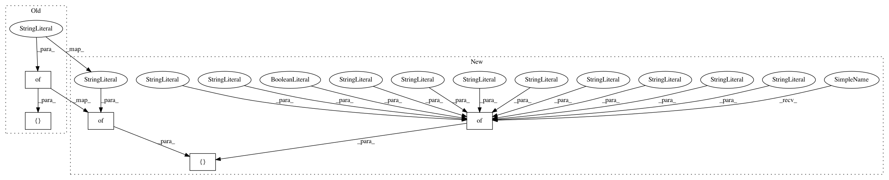

469dd7196ef90e50f1dd7284c5029f458cb856a3,functions/Windchill.py,Windchill,getParameterInfo,#Windchill#,11
Before Change
"scale given wind speed and air temperature.")
def getParameterInfo(self):
return [
{
"name": "temperature",
"dataType": "raster",
"value": None,
"required": True,
"displayName": "Temperature Raster",
"description": "A single-band raster where pixel values represent ambient air temperature in Fahrenheit."
},
{
"name": "ws",
"dataType": "raster",
"value": None,
"required": True,
"displayName": "Wind-speed Raster",
"description": "A single-band raster where pixel values represent wind speed measured in miles per hour."
},
]
def getConfiguration(self, **scalars):
return {
After Change
self.oUnits = "f"
def getParameterInfo(self):
return [
{
"name": "temperature",
"dataType": "raster",
"value": None,
"required": True,
"displayName": "Temperature Raster",
"description": ("A single-band raster where pixel values represent "
"ambient air temperature in a specified units.")
},
{
"name": "tunits",
"dataType": "string",
"value": "Fahrenheit",
"required": True,
"domain": ("Celsius", "Fahrenheit", "Kelvin"),
"displayName": "Input Temperature Measured In",
"description": "The unit of measurement associated with the input temperature raster."
},
{
"name": "ws",
"dataType": "raster",
"value": None,
"required": True,
"displayName": "Wind-speed Raster",
"description": ("A single-band raster where pixel values represent wind speed "
"measured in a specified units.")
},
{
"name": "wunits",
"dataType": "string",
"value": "mph",
"required": True,
"domain": ("mi/h", "kph", "m/s"),
"displayName": "Input Wind-speed Measured In",
"description": "The unit of measurement associated with the input wind-speed raster."
},
{
"name": "ounits",
"dataType": "string",
"value": "Fahrenheit",
"required": True,
"domain": ("Celsius", "Fahrenheit", "Kelvin"),
"displayName": "Output Wind Chill Measured In",
"description": "The unit of measurement associated with the output wind chill raster."
},
]
def getConfiguration(self, **scalars):
return {
In pattern: SUPERPATTERN
Frequency: 3
Non-data size: 5
Instances
Project Name: Esri/raster-functions
Commit Name: 469dd7196ef90e50f1dd7284c5029f458cb856a3
Time: 2016-05-10
Author: akferoz@esri.com
File Name: functions/Windchill.py
Class Name: Windchill
Method Name: getParameterInfo
Project Name: Esri/raster-functions
Commit Name: 360fc6fbe7509cc50ae13fe4b952005cbfabd13e
Time: 2014-08-27
Author: akferoz@esri.com
File Name: Reference.py
Class Name: Reference
Method Name: getParameterInfo
Project Name: Esri/raster-functions
Commit Name: 76c1cf0cd61d2e5536acf2280d21cf7786a168aa
Time: 2014-09-11
Author: akferoz@esri.com
File Name: Aggregate.py
Class Name: Aggregate
Method Name: getParameterInfo